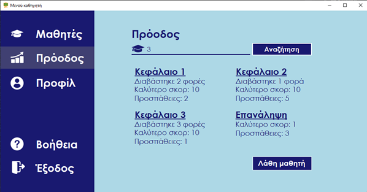
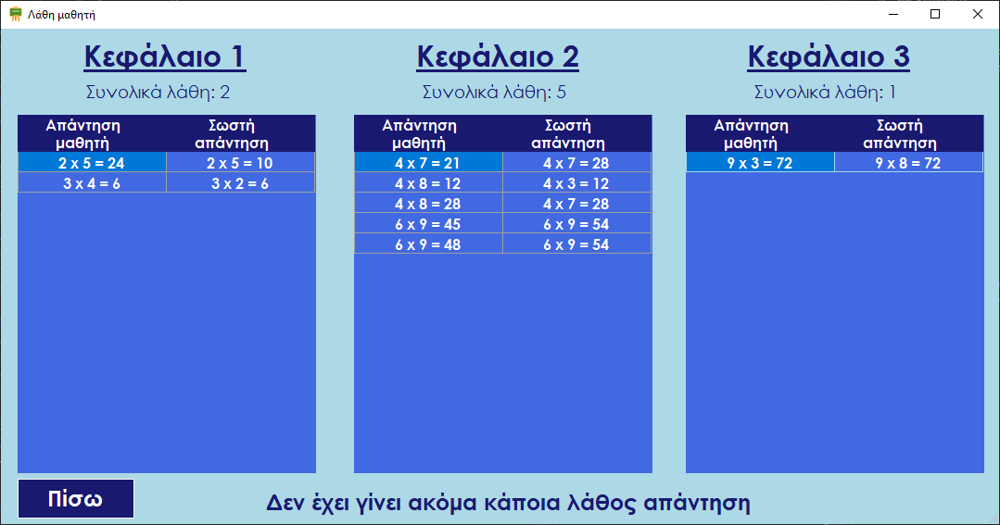

Online βοήθεια της εφαρμογής
Πρόοδος μαθητή
Πατώντας τη σχετική ένδειξη ο καθηγητής συμπληρώνοντας το id του μαθητή που επιθυμεί (το id μπορεί να το βρει στην ενότητα που παρέχονται τα στοιχεία των μαθητών), μπορεί να δει τα συγκεντρωμένα στατιστικά στοιχεία από τις προσπάθειες των μαθητών, την επίδοσή τους κατηγοριοποιημένα ανά κεφάλαιο.
Στην συνέχεια, εάν το επιθυμεί μπορεί να πατήσει την ένδειξη “Λάθη μαθητή” και με αυτό τον τρόπο θα έχει τη δυνατότητα να δει αναλυτικά ποια λάθη έκανε ο μαθητής, καθώς και την ενότητα που έκανε τα περισσότερα λάθη.
